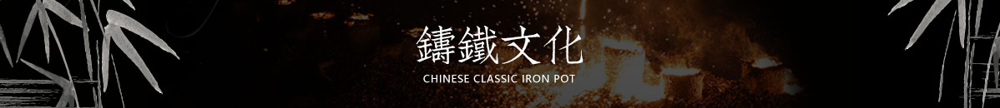

首页
经典铁壶
生肖铁壶
铁器礼品
工艺作品
铸铁文化
合作加盟
最新资讯
定制

首页
>
铸铁文化
>
工艺
>
蜡型铸造法又名脱蜡法，
中国古代在青铜铸造上已经使用这种方法，
现代的铸造中用蜡制成铸模，外敷造型材料，成为整体铸型，
称为熔模精密铸造。
加热后将蜡化去，形成空腔，浇入液态金属，冷却后成形得到铸件
空心提梁，古朴简约，
与壶身纹理相互辉映，浑然一体，隔热性能优越
空心提梁由一片铁块经由千万次手工捶打、曲卷成型
是铁壶制作中最难得一道工序，只有从业30余年的专业将人才能做好。
蜡型铸造法又名脱蜡法，
中国古代在青铜铸造上已经使用这种方法，
现代的铸造中用蜡制成铸模，外敷造型材料，成为整体铸型，
称为熔模精密铸造。
加热后将蜡化去，形成空腔，浇入液态金属，冷却后成形得到铸件
金银镶嵌，
是一种以贵金属金、银为装饰材料的表面装饰技艺。
以铁地为基，挖出所需图案轮廓边槽，
并嵌以金银金属胚料，再在金银胚料上精心雕刻出美丽的浮雕图案。
生铁质地坚硬需要精纯的雕刻能撸才能达到要求。
精美的壶身纹饰，全凭能工巧匠以刀代笔来倾情描绘。
“错金银”工艺始于战国，
事先在需要镶嵌部位的表面铸成浅槽，然后将金银丝、片嵌入凹槽，
再打磨平整光滑。
其多采用浮雕的表现手法,需要工艺师有深厚的美学素养和独到的审
美功力。错金银不是贵重材料简单的罗列堆砌，
清雅脱俗的古风，流畅的线条全部是工匠的杰作。
将铁锅放置于约200度的炭火之上，
采用传统炭火高温氧化+天然植物汁涂层防锈工艺，
防锈持久可靠，煮水健康安全，天然生态健康无毒。